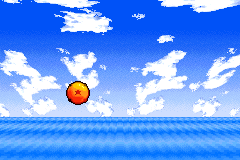

Dragon Ball Z - Bukuu Tougeki (Japan)
EEPROM 4K Save Format Spec
Cartridge Identity
- Game Code
AZJJ(FamilyAZJ)- Header Title
DRAGONBLBKTG- Maker / Revision
D9/ rev0- ROM Size
- 16.0 MiB (16,777,216 B)
- Save Media
EEPROM 4K- SHA-256
1aa47934a937cdf13b2536ad35d391262202d53f8797db11335fc43f12374596
Screenshots

Battery Save Format Specification
Open Full Save Format SpecDownload Sample .sav (512 B)Download save-format.json
- Specification Coverage
- 16 mapped fields · 0 verified checksum(s) · Confidence: LOW
- gbakit Built-In Support
- JSON schema download available
Observed Battery Save Layout
- Fill Byte & Active Size
0xFFfill · 89–89 / 512 B active (entropy 4.46 bits/B)- Active Offset Ranges
0x0–0x13,0x16–0x1B,0x1E–0x23,0x26–0x2B,0x2E–0x33,0x36–0x3B,0x3E–0x43,0x46–0x4B, +5 more (13 total)- ASCII Magic / Headers
4bdwskra- Observed Variable Regions
- 0 bytes across 0 spans: None
- Candidate Checksum/Counter Spans
- None
Hardware MMIO Subsystems
ppu_display0x8000a64,0x802d47c,0x80444f8
Regional Variants & Revisions (Family AZJ)
- Dragon Ball Z - Moogongtoogeuk (Korea) (
AZJK, 16 MiB) - Dragon Ball Z - Supersonic Warriors (Europe) (En,Fr,De,Es,It) (
AZJP, 16 MiB) - Dragon Ball Z - Supersonic Warriors (Europe) (En,Fr,De,Es,It) (Beta 1) (
AZJP, 16 MiB) - Dragon Ball Z - Supersonic Warriors (Europe) (En,Fr,De,Es,It) (Beta 2) (
AZJP, 16 MiB) - Dragon Ball Z - Supersonic Warriors (USA) (
AZJE, 16 MiB)